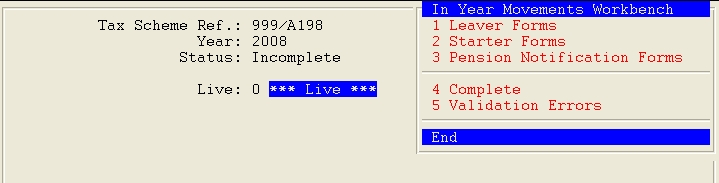

<?xml version="1.0" encoding="utf-8"?>
<html lang="en" xmlns:MadCap="http://www.madcapsoftware.com/Schemas/MadCap.xsd">
    <head><title>Viewing And/or Editing Return Details</title>
    </head>
    <body>
        <MadCap:concept term="Topics" />
        <h1 class="print">Viewing And/or Editing Return Details</h1>
        <p><span class="key">F6</span> allows you read-only access to <MadCap:variable name="Variables.enquire" /> on the return, whereas using <span class="key">RETURN</span> to enter the return will lock it for you to update.</p>
        <p>When you select a return, you will see a header information screen and a pop-up menu, as shown below.</p>
        <p>
            
        </p>
        <p>The options on the pop-up menu will depend on the status of the return:</p>
        <blockquote dir="ltr" style="MARGIN-RIGHT: 0px;">
            <p><strong><MadCap:variable name="Variables.leaver employee" style="text-transform: capitalize;" />&#160;Forms <br /><MadCap:variable name="Variables.pr starter" style="text-transform: capitalize;" /> Forms<br />Pension Notification Forms<br /></strong>These three options are always present, even if there are no forms of that type.&#160;Select one of these to view a list of forms and to update them if necessary (see <a href="WDPR0064_Form_Details.html">Form Details</a>).</p>
            <p><strong>Complete<br /></strong>This is only displayed if the return is incomplete (or if validation errors have been overridden to complete the return).&#160;Select this to flag the return as complete and ready to submit (see <a href="WDPR0032_Complete_Return_and_Resolve_Errors.html">Completing the Return and Resolving Validation Errors</a>).</p>
            <p><strong>Submit</strong>
                <br />This is only displayed if the return is complete.&#160;Select this to submit the return (see <a href="WDPR0033_Submit_Return.html">Submitting the Return</a>).</p>
            <p><strong>Validation Errors<br /></strong>This is only displayed if there are errors following an attempt to complete the return.&#160;Select this to view and resolve the errors (see <a href="WDPR0032_Complete_Return_and_Resolve_Errors.html">Completing the Return and Resolving Validation Errors</a>).</p>
            <p><strong>Submission History</strong>
                <br />This is only displayed once the return has been submitted.&#160;Select this to view details of the messages between your <MadCap:variable name="General.ProductName" /> system and the Government Gateway.</p>
        </blockquote>
    </body>
</html>